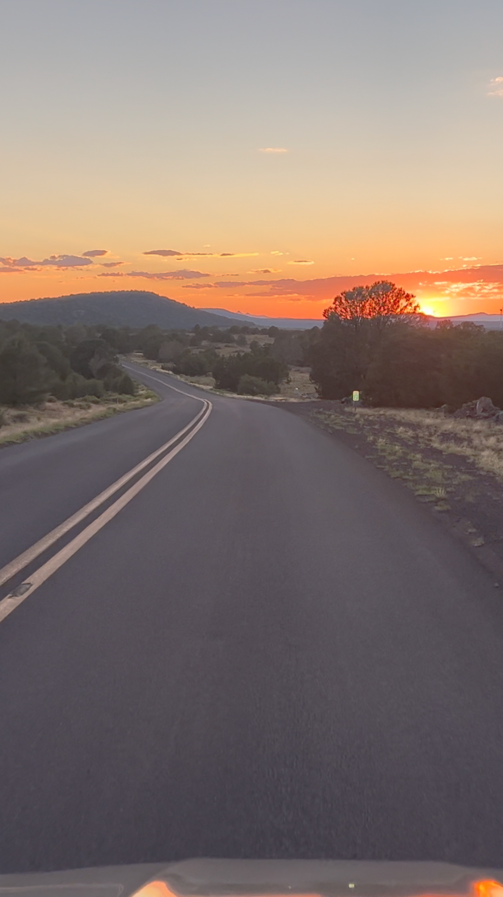
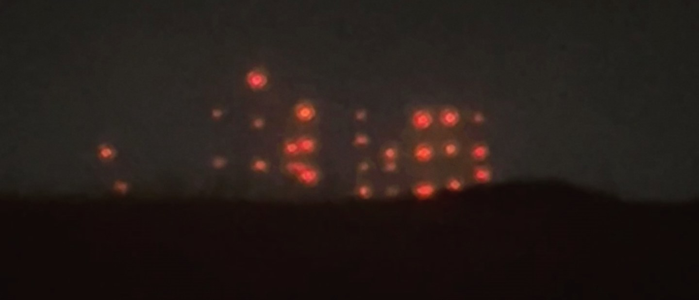
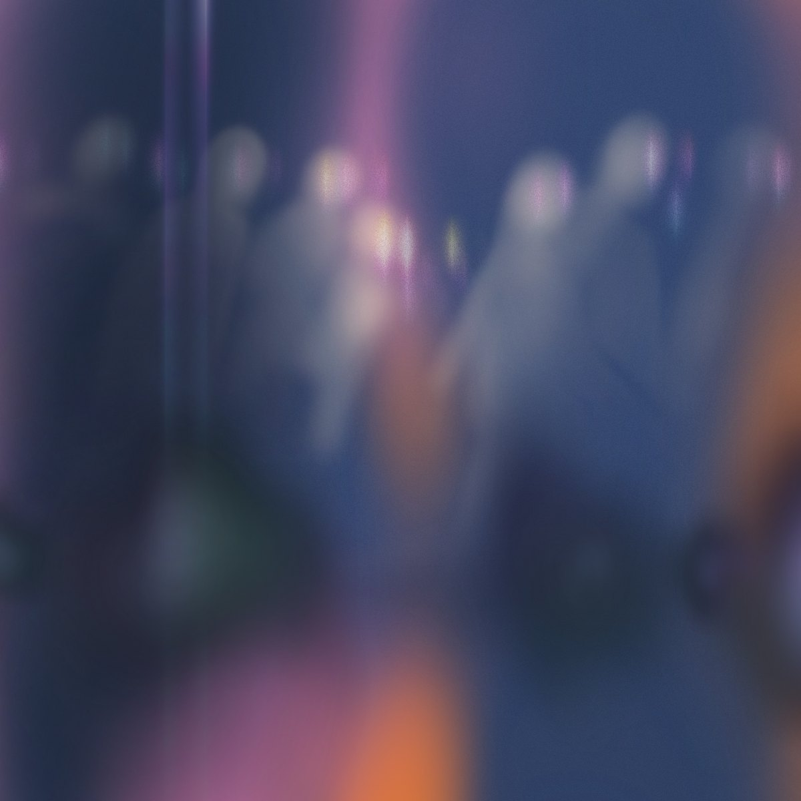
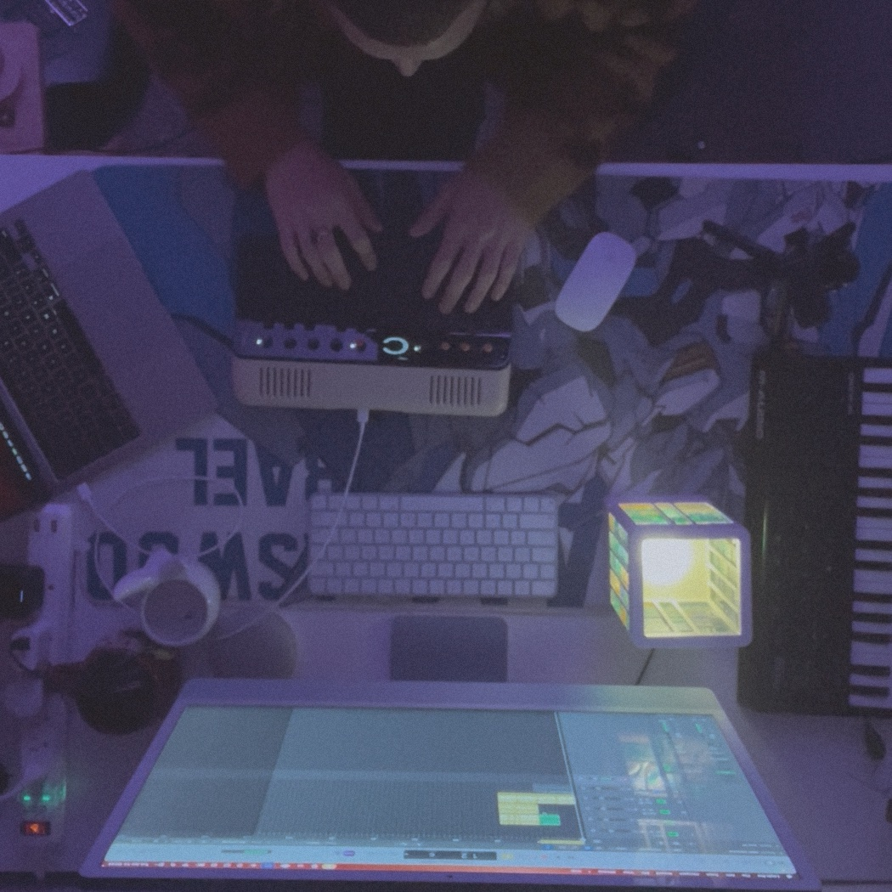
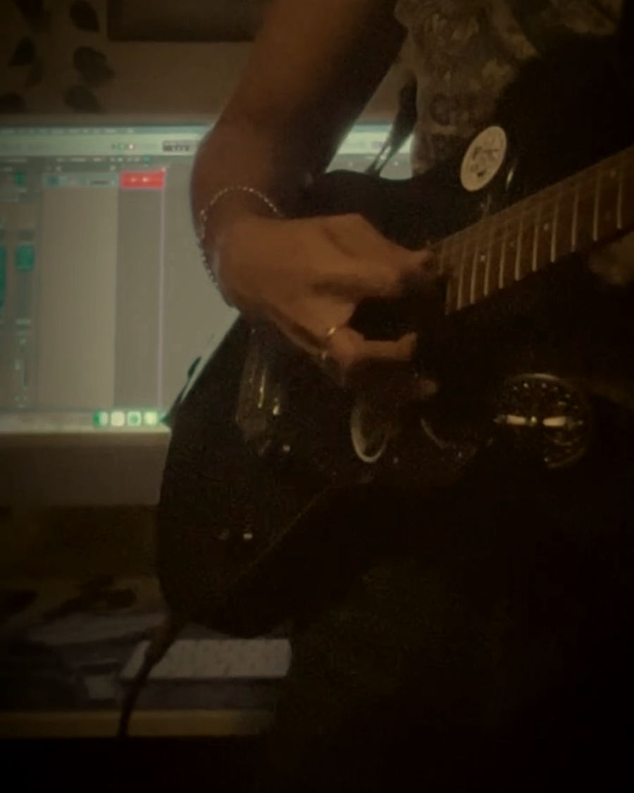

vr–400 ▸ 07awest of williams. the warm part of the sky only lasts a mile. 7:38 pm.
vr — 001the in-between hour, recorded.

vr–400 ▸ leadersongs held to tape until they keep their shape.
indie psychedelia out of phoenix, arizona.

vr–400 ▸ 03track one. october 16, 2026.
from outside a lit window you can see all of it — the lamp, the hands, the whole conversation. just not a way in. that’s the song.
listen→
vr–400 ▸ 07awest of williams. the warm part of the sky only lasts a mile. 7:38 pm.
vr — 001
vr–400 ▸ 12alavender puts it into perspective.
vr — 001
vr–400 ▸ 31aone lamp, one screen. 12:40 am. nothing named yet.
vr — 001the clearer it gets,
the further away i feel.
a note when there is something true to say. observations, not announcements.